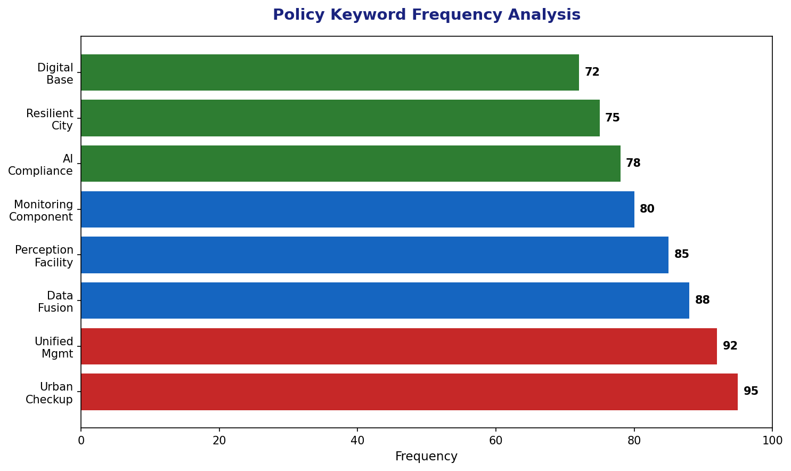
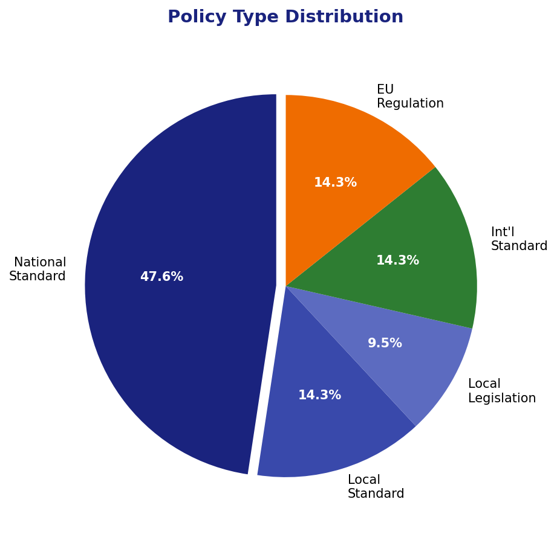
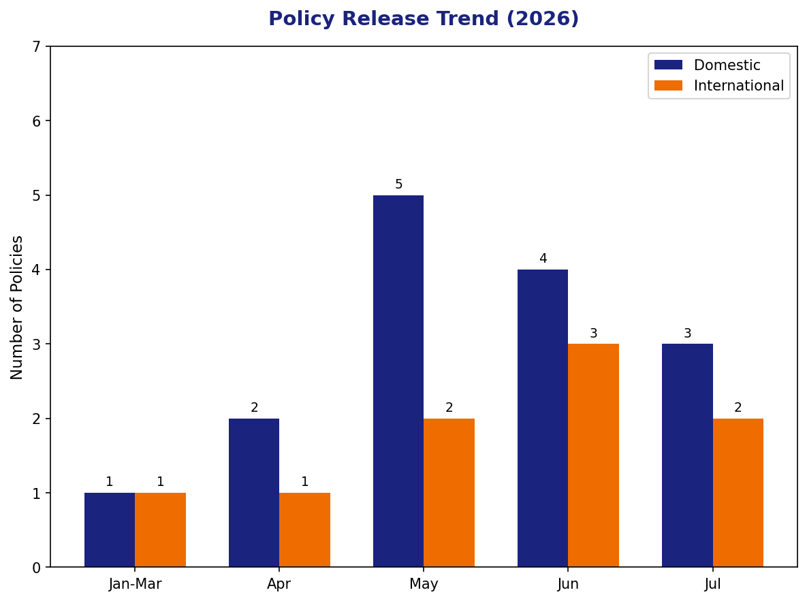
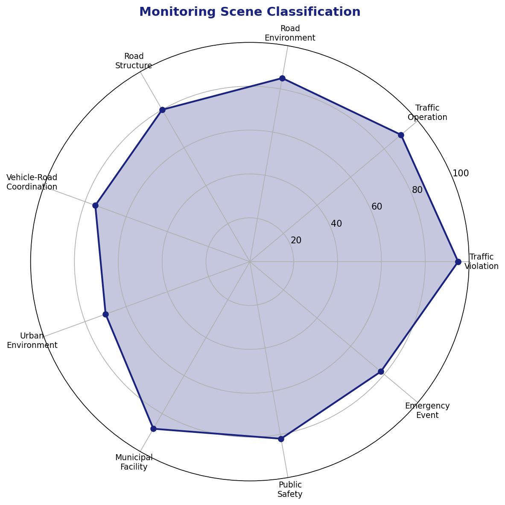
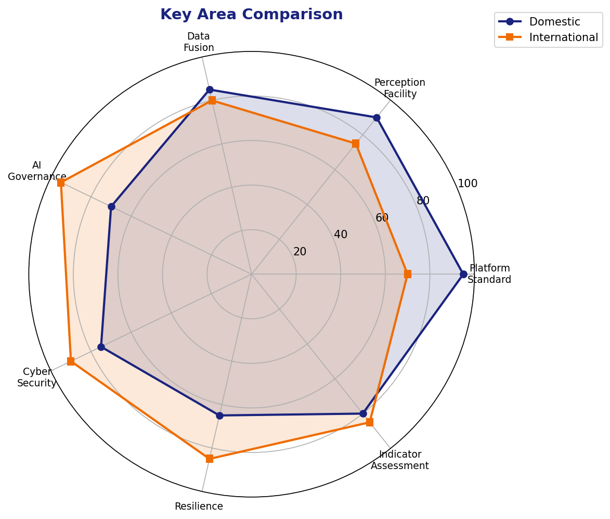

| 标准编号 | 标准名称 | 指标摘要 | 发布单位 | 数据来源 |
|---|---|---|---|---|
| GB/T 47678.6-2026 | 城市运行管理服务平台 第6部分：监测部件和事件 | 6大类监测部件（市政/交通/市容/园林/房屋/其他），11大类事件，统一编码规则和采集规范 | 市场监管总局、国家标准委 | openstd.samr.gov.cn |
| GB/T 47678.2-2026 | 城市运行管理服务平台 第2部分：通用技术 | 部省市三级平台架构，业务指导、监督检查、监测分析、综合评价、决策建议5大功能模块 | 市场监管总局、国家标准委 | openstd.samr.gov.cn |
| GB/T 47678.3-2026 | 城市运行管理服务平台 第3部分：网格 | 网格划分原则、编码规则、管理要求，实现城市管理的精细化网格覆盖 | 市场监管总局、国家标准委 | openstd.samr.gov.cn |
| GB/T 47678.4-2026 | 城市运行管理服务平台 第4部分：地理编码 | 城市管理要素的地理编码规则，支持空间定位和信息关联 | 市场监管总局、国家标准委 | openstd.samr.gov.cn |
| GB/T 47678.7-2026 | 城市运行管理服务平台 第7部分：数据 | 基础数据、业务数据、感知数据、视频数据、物联数据的分类编码、交换共享、质量管理 | 市场监管总局、国家标准委 | openstd.samr.gov.cn |
| GB/T 47678.8-2026 | 城市运行管理服务平台 第8部分：信息采集 | 人工巡查、智能感知、公众举报、部门交换等多渠道信息采集规范 | 市场监管总局、国家标准委 | openstd.samr.gov.cn |
| GB/T 43521-2026 | 智慧城市数据融合交互技术指南 | 多源异构数据融合架构、跨层级跨行业交互协议、数据安全与隐私保护技术要求 | 市场监管总局、国家标准委 | 德翼智能 |
| GB/T 47678.1-2026 | 城市运行管理服务平台 第1部分：术语和符号 | 统一城市运行管理领域术语定义和符号标识，规范行业用语 | 市场监管总局、国家标准委 | openstd.samr.gov.cn |
| GB/T 47678.5-2026 | 城市运行管理服务平台 第5部分：管理部件和事项 | 管理部件分类、事项分类、立案条件、处置时限等业务规范 | 市场监管总局、国家标准委 | openstd.samr.gov.cn |
| GB/T 47678.9-2026 | 城市运行管理服务平台 第9部分：系统验收 | 平台建设的验收条件、测试方法、评价指标和文档要求 | 市场监管总局、国家标准委 | openstd.samr.gov.cn |
| 标准编号 | 标准名称 | 指标摘要 | 发布单位 | 数据来源 |
|---|---|---|---|---|
| DB11/T 2544-2026 | 城市道路感知设施分级建设规范 | 5个等级（基础→智能），4大核心要素（感知/分析/复用/协同），9大类27小类监测场景 | 北京市市场监督管理局 | beijing.gov.cn |
| TC609-4-2026 | 城市全域数字化转型城市感知体系建设导则（征求意见稿） | 感知体系架构、感知设备部署、数据采集传输、感知能力建设等技术导则 | 全国数据标准化技术委员会 | 江苏省政务网 |
| TC609 | 城市全域数字化转型城市数字底座建设指引（征求意见稿） | 城市数字底座架构、数据资源体系、共性支撑平台、安全保障体系 | 全国数据标准化技术委员会 | 江苏省政务网 |
| 地方实践 | 北京市多杆合一建设与管理规范（升级为国家标准） | 照明、指路、网络传输、智能控制等多功能杆体的建设与管理规范，已获批国家标准立项 | 北京市（升级为国家标准） | 千龙网 |





国内城市运行管理服务平台标准从GB/T 30428（数字化城市管理）升级到GB/T 47678（城市运行管理服务平台），核心变化是从单一的业务流转管理升级为"监测-分析-决策-处置"闭环的智能治理体系，增加了实时监测、数据分析、决策建议等智能化功能模块。
GB/T 43521-2026《智慧城市数据融合交互技术指南》的发布，标志着国家层面开始系统性解决数据孤岛问题。政策要求从鼓励共享转向技术强制的标准化融合，明确多源异构数据的融合架构和交互协议。
北京DB11/T 2544-2026首次提出道路感知设施分级建设理念（5个等级），改变了以往"一刀切"的建设模式。不同等级道路按实际需求配置差异化感知能力，提高投资效率，避免过度建设。
重庆市率先以立法形式推进数字化城市治理，EU AI Act将AI系统合规要求上升为法律义务。国内外共同趋势是将技术治理经验固化为法规制度，形成长效约束机制。
EU NIS2和CER Directive强调关键基础设施的网络安全和韧性要求；国内城市体检将"安全韧性"列为首要维度。城市体征监测系统本身需要具备抗攻击、抗故障、抗灾难的能力。
| 热点领域 | 国内重点 | 国外重点 | 热度指数 |
|---|---|---|---|
| 城市运行"一网统管"平台 | GB/T 47678系列标准实施，部省市三级平台互联互通 | ISO 37122智慧城市指标，EU城市数据空间 | ⭐⭐⭐⭐⭐ |
| 道路智能感知设施 | 北京分级建设规范，9大类27小类监测场景 | EU Urban Mobility Indicators，智能交通系统 | ⭐⭐⭐⭐⭐ |
| AI治理与合规 | 《人工智能 智能体互联》系列7项国标发布 | EU AI Act全面适用，ISO/IEC 42001认证要求 | ⭐⭐⭐⭐⭐ |
| 数据融合与共享 | GB/T 43521-2026数据融合交互技术指南 | ISO/IEC 25005智慧城市数据使用评估 | ⭐⭐⭐⭐ |
| 网络安全韧性 | 城市体检安全韧性维度，等保2.0 | NIS2 Directive，CER Directive | ⭐⭐⭐⭐ |
| 多杆合一/集约建设 | 北京地方标准升级为国家标准立项 | 城市空间优化，碳排放减量 | ⭐⭐⭐ |